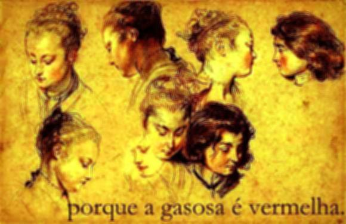

<<<<<<<<<
>
S.M., ao encontrar-se em um teatro ou igreja, sente asfixia ou dificuldade em respirar e, para evitá-lo, tem de colocar-se junto à porta. Estaria tal sentimento ligado à idéia de encerramento?Estaria tal sentimento ligado à idéia de encerramento?Estaria tal sentimento ligado à idéia de encerramento?Estaria tal sentimento ligado à idéia de encerramento? Ele não o sabia. Mas fiz-lhe recordar sua primeira asfixia ao despertar numa grave enfermidade e, quando percebeu que isso acontecera num quarto fechado, experimentou um grande alívio.
>>>>>>>>>
>>>>>>>>>>>>>
